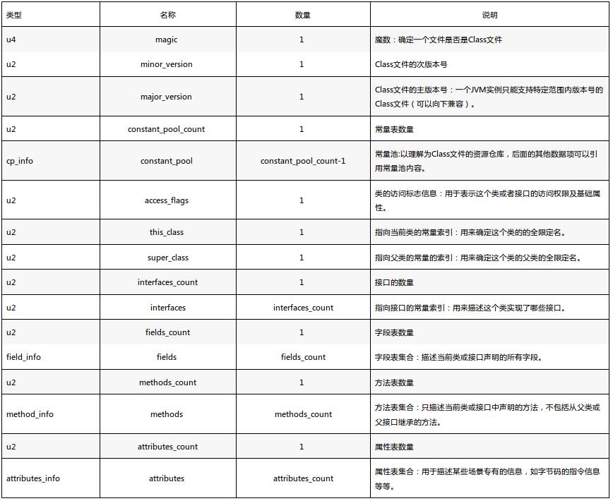
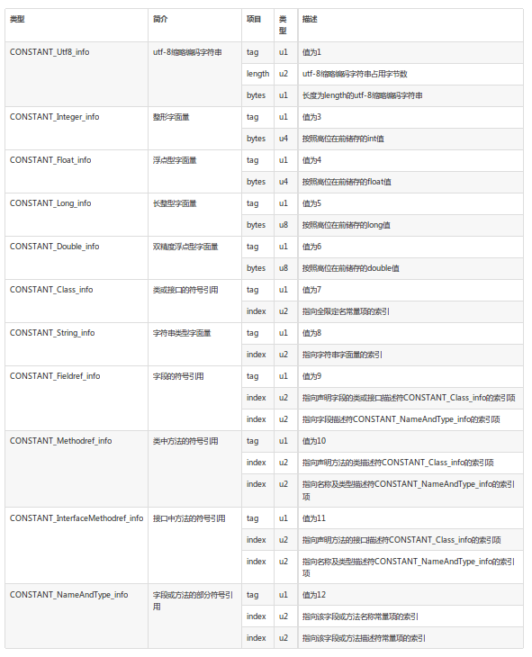

ClassFile { u4 magic; u2 minor_version; u2 major_version; u2 constant_pool_count; cp_info constant_pool[constant_pool_count-1]; u2 access_flags; u2 this_class; u2 super_class; u2 interfaces_count; u2 interfaces[interfaces_count]; u2 fields_count; field_info fields[fields_count]; u2 methods_count; method_info methods[methods_count]; u2 attributes_count; attribute_info attributes[attributes_count]; }
u1、u2、u4 分别表示1个字节，2个字节和4个字节。

constant_pool有具体的数据结构规范:

ASCII表:
2 实例分析
分析的java文件(Helloworld.java):
public class Helloworld{ public static void main(String[] args) { System.out.println("hello world"); } }
#9 01 0004 436f 6465: 01 : Utf8 (CONSTANT_Utf8 tag: 1 -> 0x01) 0004 : 长度 4 43 6f 64 65 : 依据ASCII 对应: Code C o d e
#10 0100 0f4c 696e 654e 756d 6265 7254 6162 6c65: 01 : Utf8 (CONSTANT_Utf8 tag: 1 -> 0x01) 00 0f : 长度 15 4c 69 6e 65 4e 75 6d 62 65 72 54 61 62 6c 65 : LineNumberTable 共15字符 L i n e N u m b e r T a b l e
#11 0100 046d 6169 6e: 01 : Utf8 (CONSTANT_Utf8 tag: 1 -> 0x01) 00 04 : 长度 4 6d 61 69 6e : main m a i n
#12 01 0016 285b 4c6a 6176 612f 6c61 6e67 2f53 7472 696e 673b 2956: 01 : Utf8 (CONSTANT_Utf8 tag: 1 -> 0x01) 0016 : 长度 22 28 5b 4c 6a 61 76 61 2f 6c 61 6e 67 2f 53 74 72 69 6e 67 3b 29 56: 22个字符 ( [ L j a v a / l a n g / S t r i n g ; ) V
#13 0100 0a53 6f75 7263 6546 696c 65: 01 : Utf8 (CONSTANT_Utf8 tag: 1 -> 0x01) 00 0a : 长度 10 53 6f 75 72 63 65 46 69 6c 65 : SourceFile 共10字符 S o u r c e F i l e
#14 01 000f 4865 6c6c 6f77 6f72 6c64 2e6a 6176 61: 01 : Utf8 (CONSTANT_Utf8 tag: 1 -> 0x01) 000f : 长度 15 48 65 6c 6c 6f 77 6f 72 6c 64 2e 6a 61 76 61 : Helloworld.java 共15字符 H e l l o w o r l d . j a v a
#18 0100 0b68 656c 6c6f 2077 6f72 6c64: 01 : Utf8 (CONSTANT_Utf8 tag: 1 -> 0x01) 00 0b : 长度 11 68 65 6c 6c 6f 20 77 6f 72 6c 64 : hello world h e l l o w o r l d
#21 0100 0a48 656c 6c6f 776f 726c 64: 01 : Utf8 (CONSTANT_Utf8 tag: 1 -> 0x01) 00 0a : 长度 10 48 65 6c 6c 6f 77 6f 72 6c 64 :Helloworld H e l l o w o r l d
#22 01 0010 6a61 7661 2f6c 616e 672f 4f62 6a65 6374: 01 : Utf8 (CONSTANT_Utf8 tag: 1 -> 0x01) 0010 :长度 16 6a 61 76 61 2f 6c 61 6e 67 2f 4f 62 6a 65 63 74 : java/lang/Object j a v a / l a n g / O b j e c t
#23 0100 106a 6176 612f 6c61 6e67 2f53 7973 7465 6d : 01 : Utf8 (CONSTANT_Utf8 tag: 1 -> 0x01) 00 10 : 长度 16 6a 61 76 61 2f 6c 61 6e 67 2f 53 79 73 74 65 6d: j a v a / l a n g / S y s t e m
#24 01 0003 6f75 74: 01 : Utf8 (CONSTANT_Utf8 tag: 1 -> 0x01) 0003 : 长度 3 6f 75 74 : out o u t
#25 01 0015 4c6a 6176 612f 696f 2f50 7269 6e74 5374 7265 616d 3b : 01 : Utf8 (CONSTANT_Utf8 tag: 1 -> 0x01) 0015 : 长度 21 4c 6a 61 76 61 2f 69 6f 2f 50 72 69 6e 74 53 74 72 65 61 6d 3b L j a v a / i o / P r i n t S t r e a m ;
#26 01 0013 6a61 7661 2f69 6f2f 5072 696e 7453 7472 6561 6d : 01 : Utf8 (CONSTANT_Utf8 tag: 1 -> 0x01) 0013 : 长度 19 6a 61 76 61 2f 69 6f 2f 50 72 69 6e 74 53 74 72 65 61 6d : j a v a / i o / P r i n t S t r e a m
#27 01 0007 7072 696e 746c 6e : 01 : Utf8 (CONSTANT_Utf8 tag: 1 -> 0x01) 0007 : 长度 7 70 72 69 6e 74 6c 6e : println p r i n t l n
#28 01 0015 284c 6a61 7661 2f6c 616e 672f 5374 7269 6e67 3b29 56 : 01 : Utf8 (CONSTANT_Utf8 tag: 1 -> 0x01) 0015 : 长度 21 28 4c 6a 61 76 61 2f 6c 61 6e 67 2f 53 74 72 69 6e 67 3b 29 56 : 21个字符 ( L j a v a / l a n g / S t r i n g ; ) V
u2 access_flags; u2 this_class; u2 super_class; u2 interfaces_count; u2 interfaces[interfaces_count]; u2 fields_count; field_info fields[fields_count]; u2 methods_count; method_info methods[methods_count]; u2 attributes_count; attribute_info attributes[attributes_count];
//Code 属性的结构 Code_attribute { u2 attribute_name_index; //对应一个`CONSTANT_Utf8_info `索引，内容是Code u4 attribute_length; u2 max_stack; //operand stack 操作数栈的最大深度 u2 max_locals;//局部变量数组的长度 u4 code_length; //长度小于65536 u1 code[code_length];//字节码指令 u2 exception_table_length; { u2 start_pc; u2 end_pc; //在code数组中的起点和终点[start_pa, end_pc) u2 handler_pc; //异常处理对应的字节码起始位置 u2 catch_type;// 是常量池中 CONSTANT_Class_info的索引，表示捕获的异常类型，为0则处理任何异常 } exception_table[exception_table_length];//异常表 u2 attributes_count; attribute_info attributes[attributes_count]; }
LineNumberTable_attribute { u2 attribute_name_index; u4 attribute_length; u2 line_number_table_length; { u2 start_pc; u2 line_number; } line_number_table[line_number_table_length]; }
LineNumberTable_attribute { u2 attribute_name_index; u4 attribute_length; u2 line_number_table_length; { u2 start_pc; u2 line_number; } line_number_table[line_number_table_length]; }